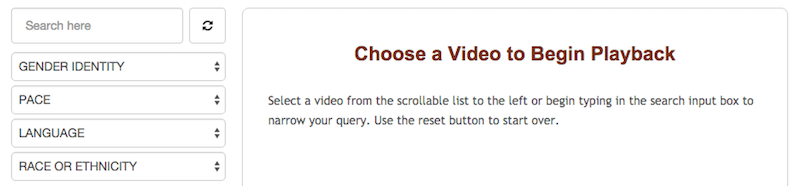

Frequently Asked Questions
Below is a collection of some of our more frequently asked questions regarding our Teaching Interpreting Media (TIM) portal.
If you have an additional question that isn’t answered here, please feel free to email us: nciec@interpretereducation.org.
GENERAL QUESTIONS:
What is a Creative Commons license?
Here’s how the folks at Creative Commons describe it: “The Creative Commons copyright licenses and tools forge a balance inside the traditional ‘all rights reserved’ setting that copyright law creates. Our tools give everyone, from individual creators to large companies and institutions, a simple, standardized way to grant copyright permissions to their creative work. The license for NCIEC produced collections in TIM use the following license:
Attribution-NonCommercial-ShareAlike CC BY-NC-SA
This license lets others remix, tweak, and build upon your work non-commercially, as long as they credit you and license their new creations under the identical terms.”
Can I view all the videos in the collection?
If you are a registered user, you can view all the videos.
Are videos in TIM downloadable?
As of May 2016, all videos in TIM can be downloaded. Please visit each collection for more information.
ASL NARRATIVES COLLECTION:
What is the ASL Narratives Collection?
These videos are a compilation of clips taken from NCIEC products that were created for other projects, specifically the Interpreting in VR Settings DVD set and Deaf Self-Advocacy Training videos. They have been selected to highlight a variety of ASL narratives. We encourage interpreters, educators and mentors to explore and use these videos for pre-service and professional development purposes.
What type of narratives are featured in this collection?
There are two types of narratives in this collection. The first type is a monologue delivered by a single individual. The other type includes an interview format where long-form answers constitute ASL narratives of significant duration.
How do I browse the ASL Narratives collection?
There are four categories that allow you to narrow your search for videos: gender identify, pace, language, and race or ethnicity. As you choose among these categories, titles of videos that meet the selection criteria will be listed from which you may choose.
SPECIALTY SETTINGS COLLECTION:
What is the Special Settings Collection?
First available and distributed in DVD format, these four video productions of the NCIEC focus on specialty areas of interpreting and are now available as part of Teaching Interpreting Media.These videos may be used to support development of interpreting competencies for legal, trilingual, and vocational rehabilitation and other community settings.
Does this collection have supporting materials?
Curricular material and thought-provoking questions to support individual, group, and classroom use are provided within the video material or as accompanying documents.Interpreting educators may draw on these materials, in part or as a whole, for myriad teaching needs.
Are there restrictions on how this content can be used?
We urge the use of these materials as long as the NCIEC is attributed as the creator of the content, it is not used for commercial purposes and any subsequent use is shared-alike. Click here to learn more about Creative Commons Licensing information.
TERPTALKS COLLECTION COLLECTION:
Why does the TerpTalks collection look different?
If you’re a regular user of TerpTalks, you’ll notice the appearance of the site has changed. However, everything you like about the collection remains the same including the search function. A benefit of the new site is that, you can now download TerpTalk videos!
How do I browse the TerpTalks collection?
You can browse using a faceted approach. Click on browse terptalks. You’ll see a list of features listed on the page. You can begin with almost any feature. As an example, click on the language you wish to peruse. All the available videos in that language will appear. Then click on the features, such as “text-type,” “register,” or “race.” Each time you click on a feature your search results will narrow. Once you see your search results, you can widen the search again by x-ing out unwanted features.
You can also search by terms by typing into the search text box. Here are some examples of the searchable terms:
Title:"Deaf Ethnicity & Ancestry"Topic:"music" or "public speaking"Duration:"average duration" (20 mins)
"short duration" (15 mins)
"long duration" (over 25 mins)
What’s special about a featured video?
Featured videos are selected to be available in full to anyone visiting TIM. In order to view others in the collection, it is necessary to register.
Why is my initial comment approved by a moderator?
This approval process allows us to vet users. Once your initial comment is approved, all future comments may be posted without prior approval.
Why don’t all the videos in the TerpTalks collection have accompanying learning exercises?
The National Interpreter Education Center (NIEC) invited master teachers from the Outcomes Circle programs to choose one video and develop a thorough lesson plan for its use. The results are the ten videos with accompanying learning exercises provided on this site. It is our aim to solicit and post additional exercises in the future.
How do I find videos with learning exercises?
The 10 videos that have learning exercises can be accessed through the Learning Exercises tab found under terptalks. Please keep in mind that these exercises are offered as examples of what can be done with a terptalk video. They are suggestions, not requirements.